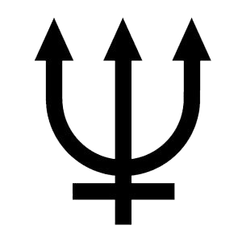

Neptuno
Neptuno
Neptuno es oscuro, frío y muy ventoso. Es el último de los planetas de nuestro sistema solar.
Está más de 30 veces más lejos del sol que la Tierra. Neptuno es muy similar a Urano. Está hecho de una sopa espesa de agua, amoníaco y metano sobre un centro sólido del tamaño de la Tierra. Su atmósfera está hecha de hidrógeno, helio y metano.
El metano le da a Neptuno el mismo color azul que Urano. Neptuno tiene seis anillos, pero son muy difíciles de ver.
un año en neptuno dura 165 años terrestres